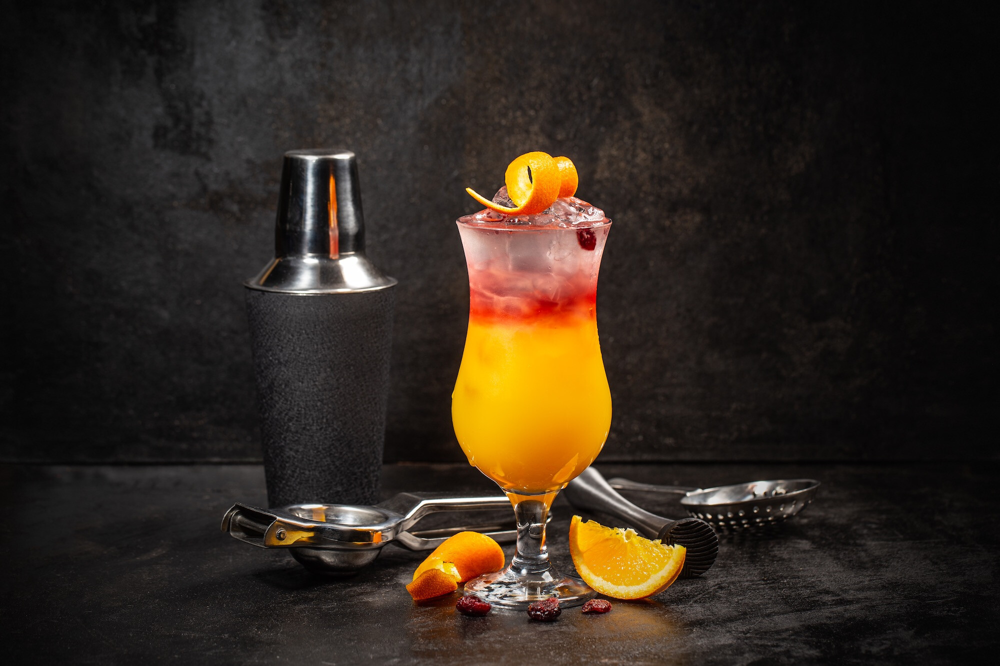
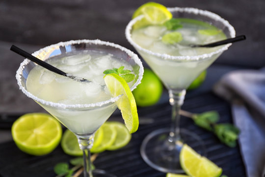
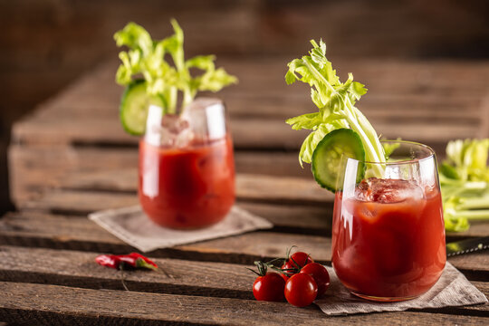
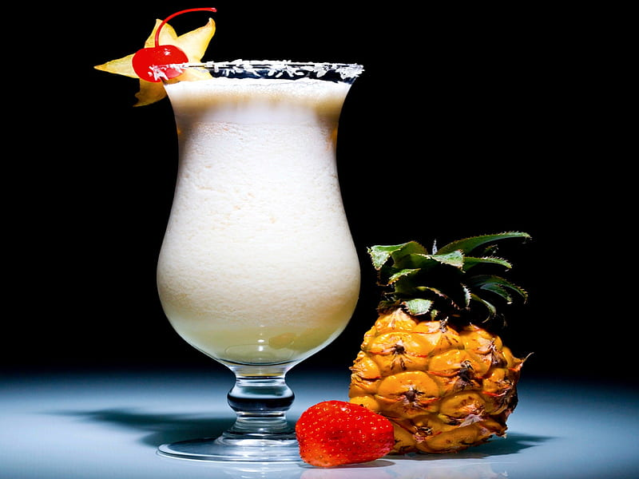

Our Recipes
Espresso Martini

The Espresso Martini is a sophisticated cocktail that combines the rich flavors of coffee with the smoothness of vodka and a hint of sweetness. It's made with vodka, coffee liqueur (such as Kahlúa), freshly brewed espresso, and sometimes a touch of simple syrup for sweetness. The ingredients are typically shaken with ice until well chilled and strained into a martini glass. The Espresso Martini offers a perfect balance of bold coffee flavor with the kick of alcohol, making it a popular choice for those looking for a caffeinated twist on a classic cocktail.
Sex on the Beach
The Sex on the Beach cocktail is a popular mixed drink known for its fruity and refreshing taste. It typically combines vodka, peach schnapps, orange juice, and cranberry juice, creating a colorful and flavorful beverage. The cocktail is often served over ice in a highball glass, garnished with a slice of orange or a cherry. Its name evokes images of sandy shores and tropical getaways, making it a favorite among those looking for a fun and summery drink option.
Margarita
The Margarita is a beloved cocktail renowned for its simplicity and tangy flavor. It's made with tequila, lime juice, and triple sec, typically served in a glass with a salted rim. Sometimes it's also served over ice or blended with ice to create a frozen version. The Margarita strikes a perfect balance between sweet, sour, and the distinct flavor of tequila, making it a refreshing and versatile drink enjoyed at bars, parties, and Mexican restaurants worldwide.
Bloody Mary
The Bloody Mary cocktail is a classic and iconic drink known for its bold and savory flavor profile. It typically consists of vodka, tomato juice, Worcestershire sauce, hot sauce, and various spices such as black pepper, celery salt, and horseradish. The cocktail is often garnished with a stalk of celery, a wedge of lemon, and sometimes other items like olives or pickles. With its unique blend of ingredients, the Bloody Mary is a popular choice for brunch or as a hangover cure due to its tangy and invigorating taste.
Pina Colada
The Piña Colada is a tropical and creamy cocktail celebrated for its delightful blend of flavors reminiscent of a beach vacation. It's made with rum, coconut cream or coconut milk, and pineapple juice. The ingredients are typically blended with ice until smooth and creamy, then poured into a glass. The Piña Colada is often garnished with a wedge of pineapple or a cherry, adding a touch of visual appeal to its already enticing taste. With its refreshing combination of coconut and pineapple, the Piña Colada is a beloved choice for those seeking a taste of the tropics in a glass.